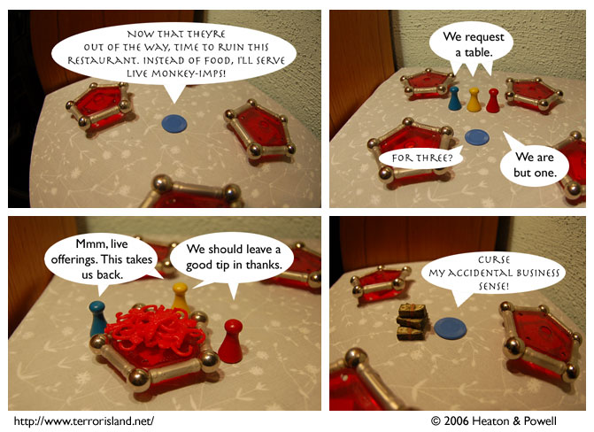

Strip #76
— Wednesday, December 6, 2006
Famous Jame’s Famous Monkey-Imps do not come with plates or utensils.
Notes, Thoughts, &c.
Ben’s Notes
Switching back and forth between Gill Sans and Herculanum is starting to get annoying. I’m glad we’re not one of those comics with a different font for each character.
Lewis’s Notes
I’ve been thinking that I really like the effect of the demon’s speech looking different. I am going to talk to Ben about setting it up so that each character has his or her own unique font.
Unrelatedly, what is this growing phenomenon of “Internet”? (hat tip to Ryan North)